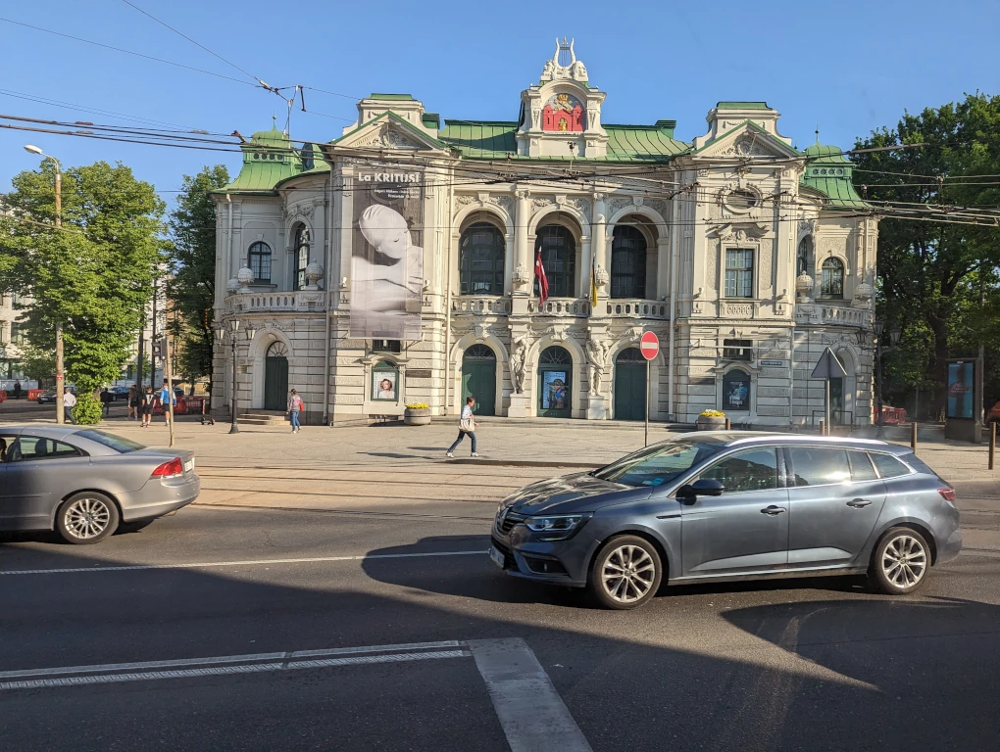
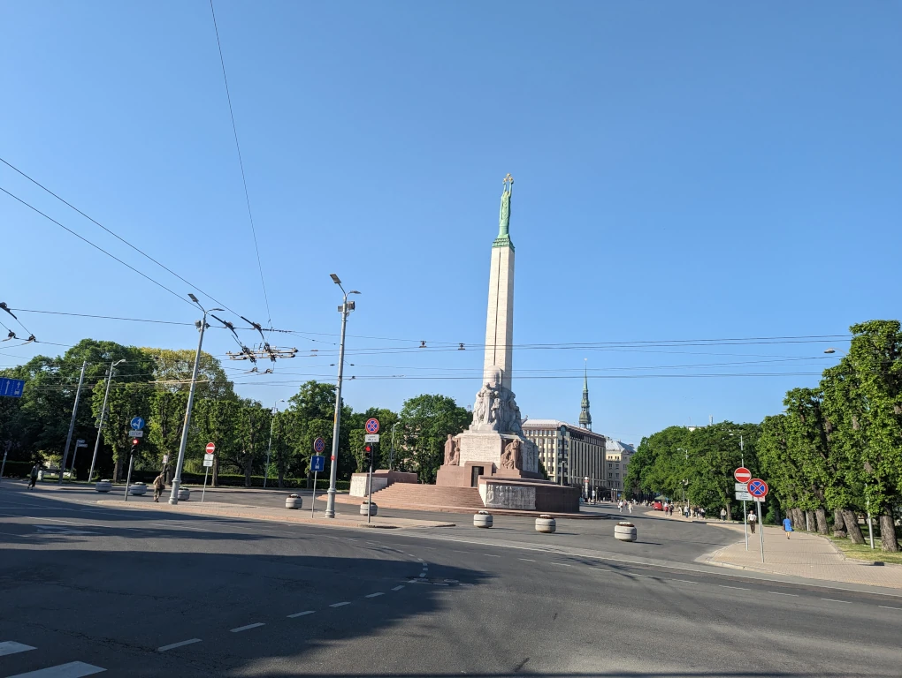

On days when I need to take public transport to the University of Latvia, I start from the Botāniskais dārzs bus stop shown in the image. Buses 37 and 41 depart from this stop and take me to the Esplanāde stop.
Although there is also a trolleybus stop called Dārza iela for trolleybus 25 nearby, it is not as convenient as it will take me on a longer route and take a bit more time.
Sometimes the bus is empty, so I can find a seat, but on other days it can be quite crowded.
On a sunny day, I managed to take a photo of the Latvian National Theatre through the bus window.
I'm not a big theatre enthusiast myself, but I have visited it several times either with my parents to watch a play that interested them or with my class in high school, which was usually directly covered by the school or a special fund for schools.
My favorite view, however, is when I get off at the Esplanāde stop and, on my way to the university, I see the Freedom Monument. I pass by it almost every day, and it serves as a reminder of the wonderful freedom that we all cherish in joy or sometimes sorrow.
One very joyful day was May 29, 2023, when I had walked past it early in the morning, not knowing yet that it would welcome the hockey players for winning the bronze medal in the 2023 IIHF World Championship. Only later during the day, while listening to lectures, I found out about it and later went to see it myself. There was a large crowd, so visibility wasn't great, but it was still interesting to witness.